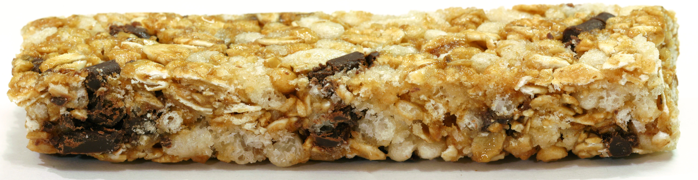

Calories Burned

With swimming being an extremely physically intensive sport, swimmers are losing anywhere from around 590 to 704 calories per hour of swimming fast depending on your weight. This does not account for all the dryland and weight training workout that occurs outside of the water. Before the Beijing Olympics in 2008 Michael Phelps was eating around 12,00 calories per day. This shows how extremely important it is to replenish with a lot of healthy recovery foods after a workout in order to keep a great condition and physique for your next practice or race.
Water

Despite being in the water for around 2 hour time periods, you are still losing an excessive amount of hydration just like any other workout or sport that happens on land. The Institute of Medicine recommends drinking around 3.7L of water a day for men and 2.7L of water a day for women. You truly want to avoid dehydration while working out because hyrdation plays a huge part in regulating body temperature, transportating red blood cells throughout the body, and forming protein and glycogen. These all factor in allowing for a normal growth and recovery in different muscles after an intense swimming workout, which overall allows your body to function properly during a nice hard workout.
Protein


Protein also plays a vital role for ongoing muscle repain and growth. Having a moderate amount of protein such as beans, nuts, red meat, white meat, or eggs will ultimately help in the muscle healing process.
Carbohydrates

Carbohydrates is the swimmmers body's preferred fuel. Carbohydrates the most effective food for high intensity swimming so it is extremely important to eat a good amount of it regularly throughout the day especially before and after workouts. Make sure to revolve your snacks and meals around good carbohydrate choices to promote better health which will ultimately allows you to perform in the pool better.
